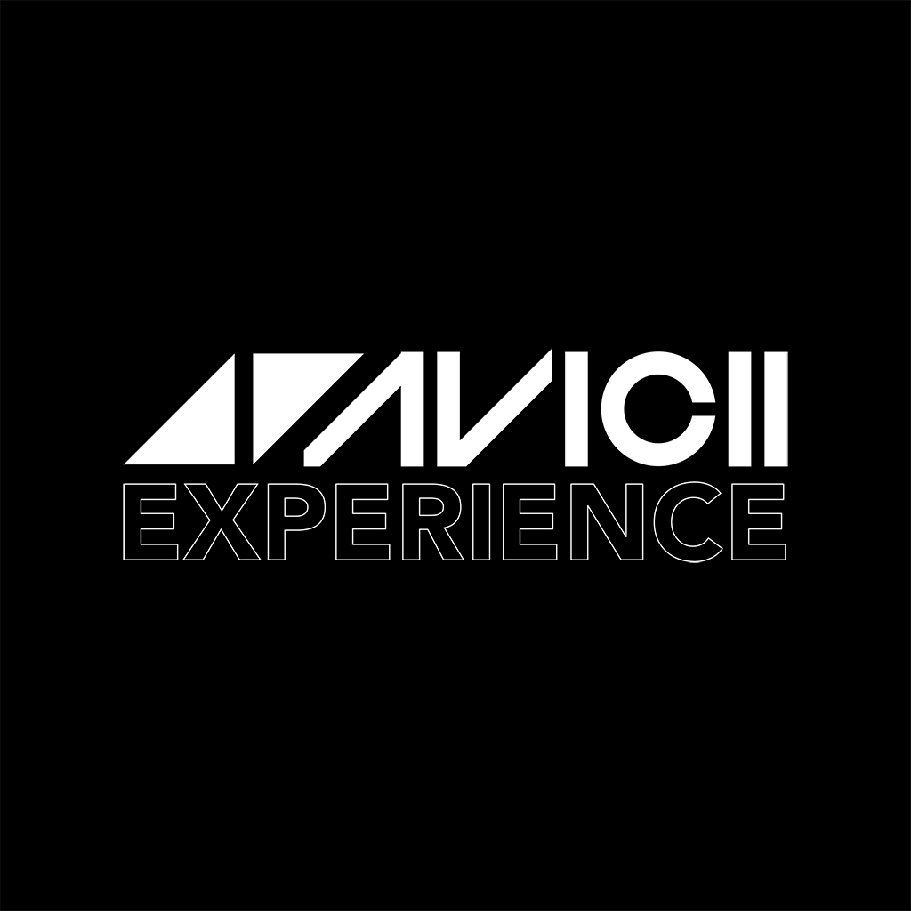
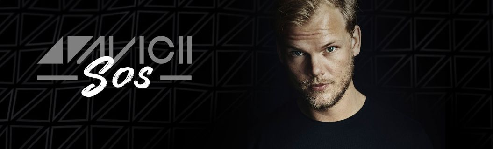

Honored guest: Avicii(Tim Bergling) The amazing DJ that shook the world with many spectacular songs that had embeded into many music lovers' hearts. He first started posting music since he was 16 and had became one of the biggest music creator since then. He has collabed with countlest other artists, has created many great albums, his music was on top lists many times and he was even awarded with a Grammy Award once. He was even called by many as the king of EDM. He suicided in April 2014 due to depression and stress leaving the world with hundreds of amazing songs. As a tribute to Avicii, the organizers decided to customize a feature on the main stage to pay respect to this amazing DJ in both 2018 and 2019
 